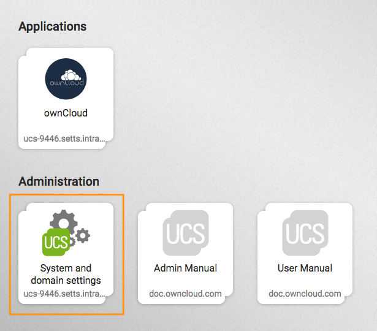
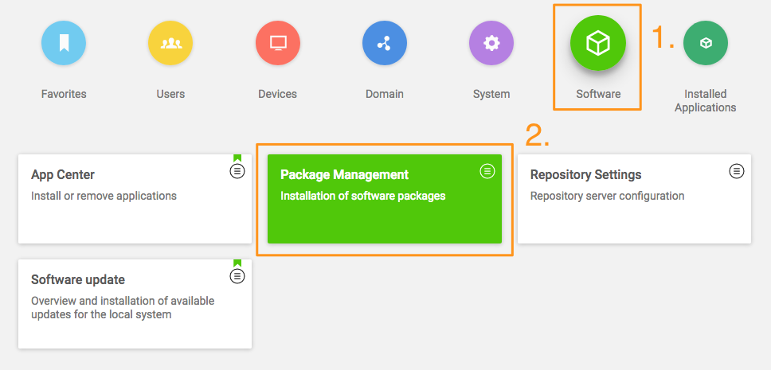
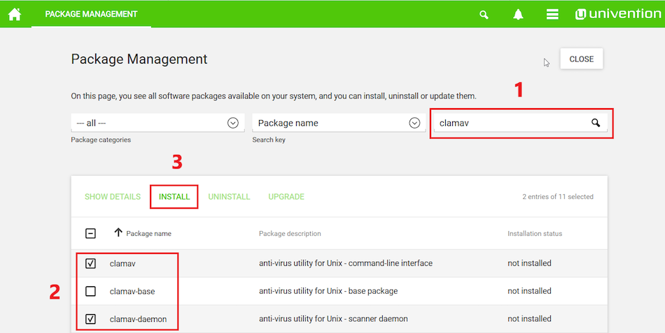

Install Antivirus Software in the ownCloud Appliance¶
This guide details how to enable a virus scanner in the ownCloud Appliance. It is composed of two parts:
Install ClamAV and Related Components¶
First, start the appliance and go to “System and domain settings”.

When there, log in with the administrator account. After you have done that, click “Software” and open “Package Management”, as in the screenshot below.

From there, you first need to install ClamAV. To do this, in the third field, next to the one containing the text “Package name”, type in the phrase: “clamav” (1). Doing so filters the list of packages to only those matching that phrase. In the filtered list of packages, check the checkboxes next to “clamav” (2), “clamav-freshclam”, and “clamav-daemon”.
After doing that, click “INSTALL” (3) above the listed packages, next to “SHOW DETAILS”, to install them.

After you do so, a confirmation dialog appears, as in the screenshot below, asking for confirmation to install the packages. Confirm the choice by again clicking “INSTALL”.

The installation should only take a few minutes.
Configure ownCloud to Use ClamAV¶
You next need to configure ClamAV in your ownCloud instance. Please refer to the ClamAV documentation for instructions on how to do that.
If you try to update the ClamAV virus database manually, by entering freshclam, and see the error below, it means that freshclam is already updating the database.
ERROR: /var/log/clamav/freshclam.log is locked by another process
ERROR: Problem with internal logger (UpdateLogFile = /var/log/clamav/freshclam.log).
Updates are run based on the configured time interval in the applicable Cron job. In the example below, the update would run every 47 minutes:
# m h dom mon dow command
47 * * * * /usr/bin/freshclam --quiet
If there are errors running the freshclam process, check if a process is blocking the log file, by running the following command:
lsof /var/log/clamav/freshclam.log
If you want to refresh the ClamAV database manually, follow these steps:
# Gently end the freshclam process with this command:
sudo pkill -15 -x freshclam
# Start the refresh process again with this command:
sudo freshclam
..warning:
When the app is enabled — but is not configured or has an incorrect configuration — it will reject **all** uploads for the entire instance. To avoid this situation, use ``sudo -u www-data php occ config:app:set files_antivirus whatever_key value`` to configure the app correctly.